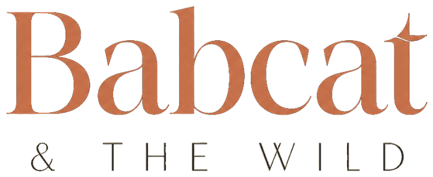
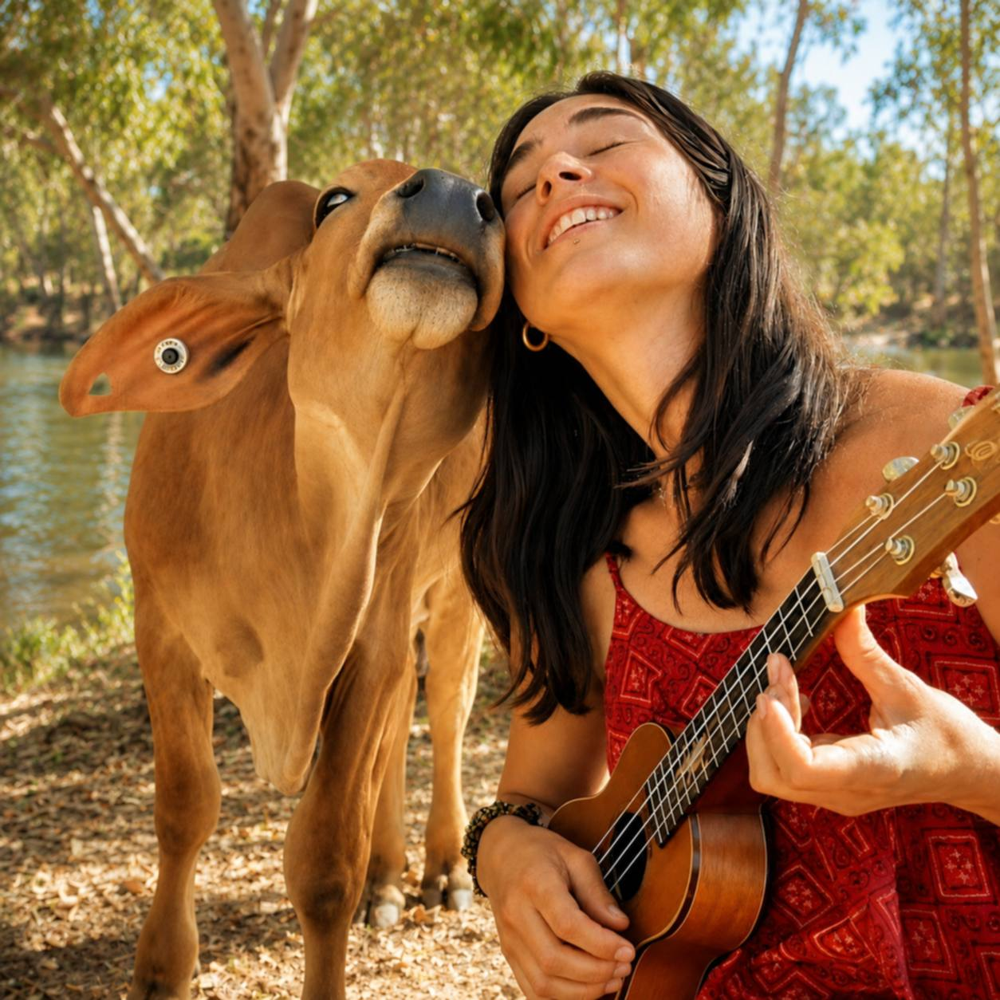
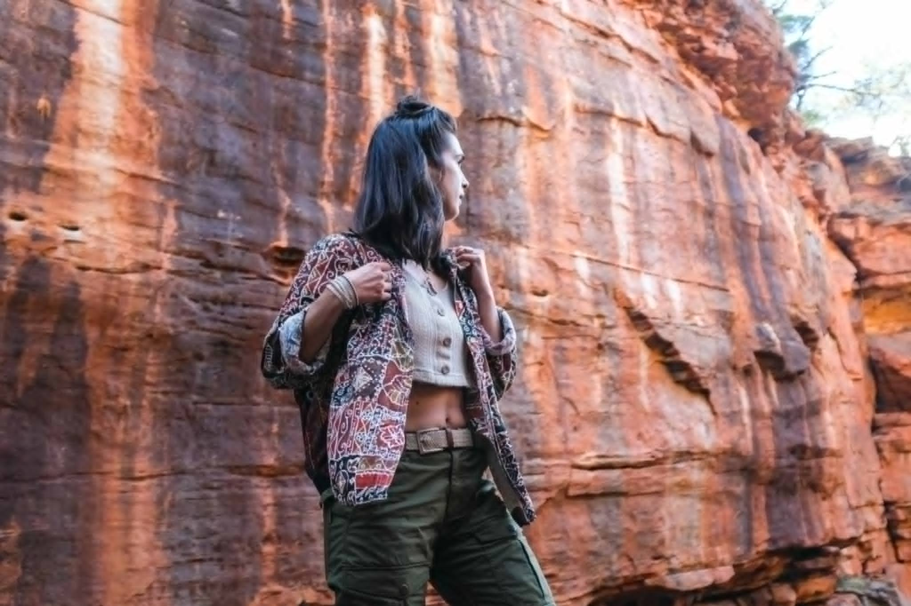
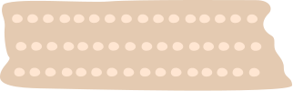
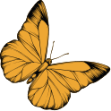
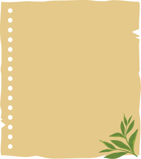

Consultation
Comportement
Griffades, anxiété, malpropreté, cohabitation : écouter ce que votre chat ou votre chien essaie de dire — sans jugement, il n'y a pas de mauvais humain ici.
Découvrir la consultation comportement
Les animaux sont ma boussole.
J'accompagne les humains à mieux comprendre, nourrir, soigner et installer leurs chats et chiens dans un environnement fonctionnel, beau et profondément respectueux de leur nature.


Qui suis-je
Je suis Elisabeth — Babeth pour les animaux et leurs humains. Soigneuse animalière et conseillère en nutrition et comportement, j'ai appris mon métier au contact du vivant : les cattle stations australiennes, les refuges des Balkans, deux ans auprès des chats d'un refuge bruxellois.
Diplômée en architecture d'intérieur, j'ai fait de nos maisons mon terrain : des lieux beaux pour les humains, justes pour les animaux.
Avec les animaux, je suis partout chez moi.
Découvrir mon histoireConsultations
Chaque accompagnement commence par une écoute : votre animal d'abord, vous avec.
Consultation
Griffades, anxiété, malpropreté, cohabitation : écouter ce que votre chat ou votre chien essaie de dire — sans jugement, il n'y a pas de mauvais humain ici.
Découvrir la consultation comportementConsultation
Le chat est un carnivore strict, le chien un carnivore latent : bilan personnalisé, transition alimentaire et lecture des compositions, dans le respect de leur physiologie.
Découvrir la consultation nutrition★ Spécialité signature
Parcours muraux, hauteurs, points d'eau, plantes safe, cachettes : votre intérieur devient un territoire vivant, beau pour vous, juste pour eux.
Découvrir la consultation aménagement animal-friendlyConsultation
Une garde professionnelle par une soigneuse animalière : visites quotidiennes, médicaments, suivi santé — avec compte rendu photos et vidéos chaque jour.
Découvrir la garde et les soins à domicile★ La spécialité signature
Un chat d'intérieur ne vit pas dans votre salon : il vit dans son territoire. L'aménagement animal-friendly unit architecture d'intérieur et bien-être animal — parcours muraux, hauteurs et cachettes, points d'eau, zones de repos, plantes sans danger. Sans transformer votre maison en arbre à chat géant.



Guides & conseils

Cet additif humectant se cache dans beaucoup de gammes « semi-humides », alors qu'il est interdit dans l'alimentation des chats en Europe. Comment le repérer sur une étiquette, et par quoi remplacer ces produits.
Lire la suite : le propylène glycol dans les croquettes
Ni à côté de la gamelle, ni dans un passage, ni au fond d'un placard fermé : l'emplacement compte autant que le bac. Les règles de territoire qui évitent la plupart des accidents de malpropreté.
Lire la suite : où placer la litière
Lys, philodendron, ficus : certaines plantes très courantes sont dangereuses pour les chats et les chiens. La liste de celles qu'on garde, celles qu'on éloigne — et de belles alternatives sans risque.
Lire la suite : plantes toxiques ou safeTémoignage

Ziggy urinait hors de sa litière depuis des mois, et on avait tout essayé. Babeth a observé notre appartement une heure, déplacé trois choses, expliqué pourquoi — deux semaines plus tard, plus un seul accident. Elle ne juge jamais : elle traduit.
Camille & Ziggy, chat européen

Les consultations se font à domicile, à Bruxelles et alentours, ou en visio selon la demande.
Parlez-moi de votre animal — on vous répond avec soin.